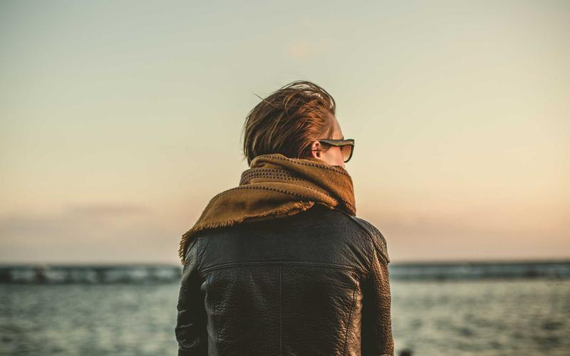
Safaris inesquecíveis, praias paradisíacas, montanhas e cultura vibrante. O verdadeiro espírito da África te espera.
Explorar Destinos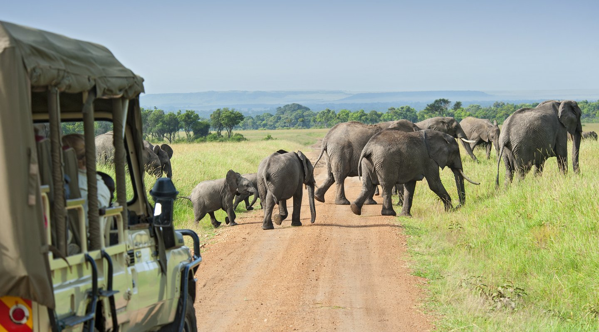
O coração selvagem do Quênia. Lar da famosa Grande Migração, onde mais de 1,5 milhão de animais cruzam as planícies.
Melhor época: Julho a Outubro (Grande Migração)
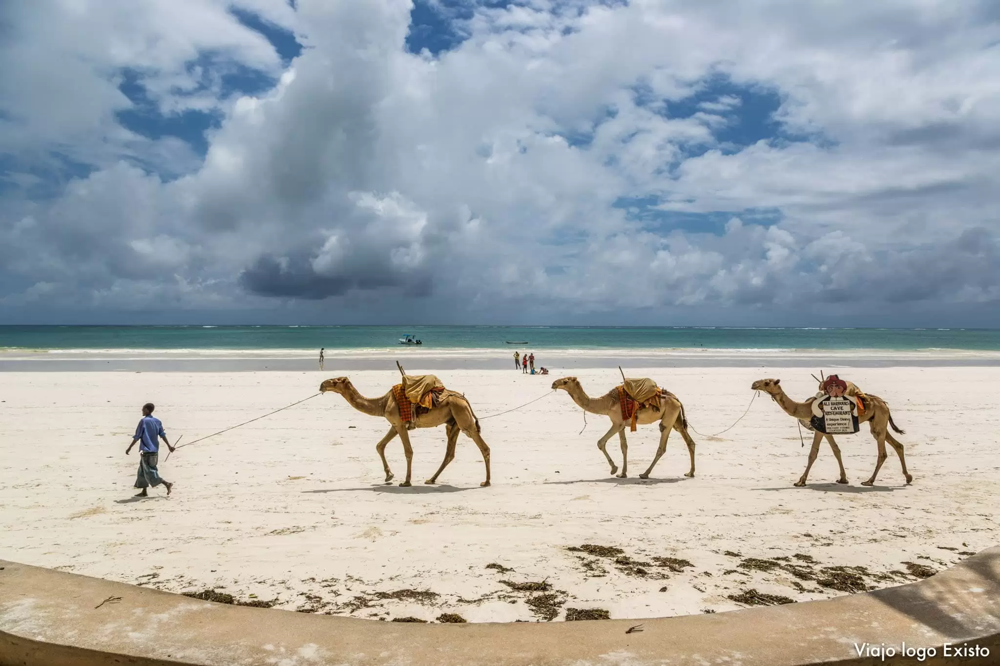
Águas cristalinas, recifes de coral e um clima tropical perfeito. O lado relaxante do Quênia.
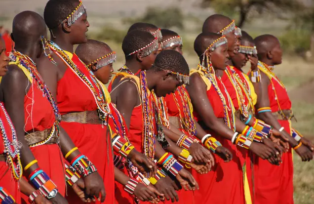
Conheça o povo Maasai, as danças tradicionais, mercados vibrantes e a rica herança swahili.
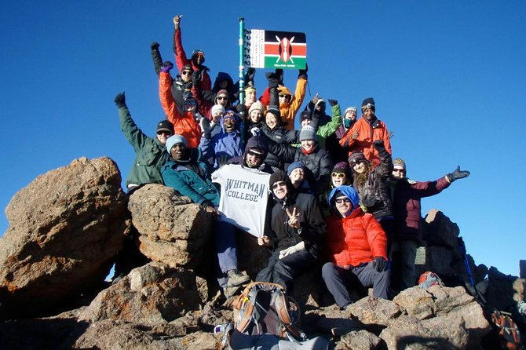
Para os espíritos mais aventureiros: trilhas, montanhismo e esportes radicais.
Dica: Leve boa condição física para as atividades de alta altitude.
Escolha sua aventura no Quênia com pacotes completos e bem avaliados.
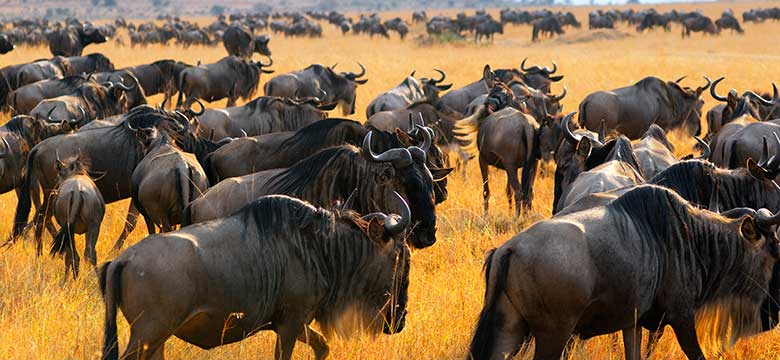
R$ 9.850
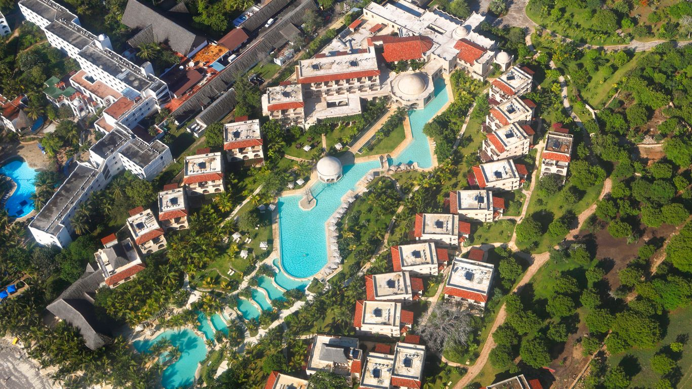
R$ 7.290
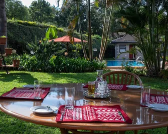
R$ 12.450
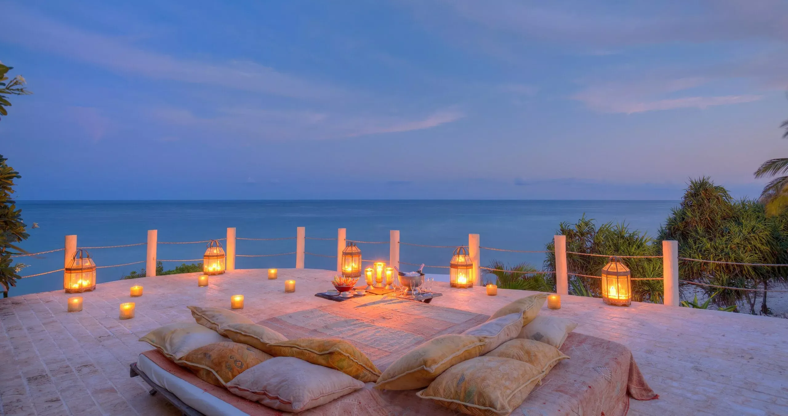
R$ 8.670
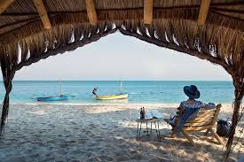
R$ 11.200
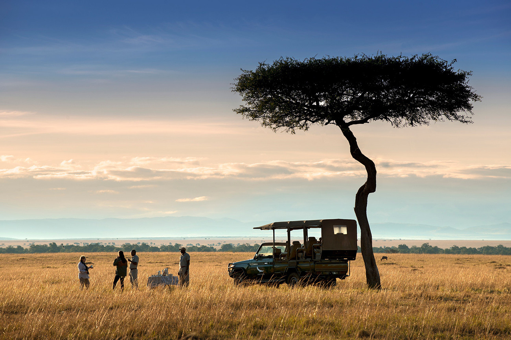
R$ 18.900